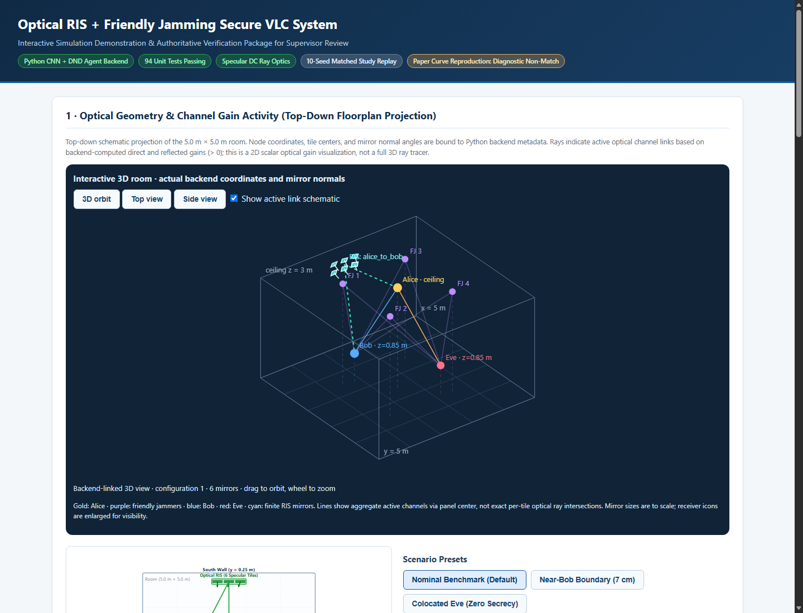

RIS + FJ + VLC + DRL — Team Brief
Team handoff · 13 November 2026 · 1 / 5
আমাদের research project:
এ পর্যন্ত কী হয়েছে?
Optical RIS + Friendly Jamming + VLC + DRL
দলের সবার জন্য মূল বার্তা: ২০২৪ paper-এর system model-এর ওপর optical RIS extension implement করা হয়েছে। Simulation, joint controller, saved experiments এবং supervisor demo আছে। তবে implementation complete হওয়া আর প্রত্যাশিত সব security benefit প্রমাণিত হওয়া এক বিষয় নয়।
১ · আমাদের উদ্দেশ্য
Alice আলো দিয়ে Bob-কে confidential data পাঠাবে। Friendly jammers Eve-এর reception খারাপ করার চেষ্টা করবে। Optical RIS mirrors ঘুরিয়ে পরিবেশের optical channels পরিবর্তন করবে। DRL jammer weights ও RIS configuration একসঙ্গে বেছে নেবে। লক্ষ্য: Bob-এর service বজায় রেখে secrecy উন্নত করা—সব অবস্থায় নিশ্চয়তা এখনো প্রতিষ্ঠিত নয়।
২ · ২০২৪ paper থেকে কী রাখা হয়েছে?
মূল Alice/Bob/Eve এবং চারটি friendly-jammer fixture, VLC channel framework, paper-mode secrecy/BER ও reward framework বজায় রাখা হয়েছে। নতুন physical component হলো optical RIS। সেটি নিয়ন্ত্রণ করতে action representation ও CNN input সামান্য adapt করা হয়েছে।
গুরুত্বপূর্ণ: Published paper-এর numerical curves হুবহু reproduce হয়নি। “Paper model + explicit implementation assumptions” বলা ঠিক; “100% original-paper reproduction” বলা ঠিক নয়। আলাদা physical mode আমাদের primary RIS baseline নয়।
৩ · বর্তমান setup
Room: 5 × 5 × 3 m। Alice ceiling-এ, চারটি ceiling jammer, Bob/Eve receiver। RIS-এ ছয়টি finite mirror; পাঁচটি configuration: off, Alice→Bob, jammers→Eve, split এবং neutral। সব links একই physical mirror normals ব্যবহার করে।
Implementation & equations · 2 / 5
কোডে কীভাবে কাজ করছে?
Direct Lambertian channel-এর সঙ্গে finite, specular RIS reflection যোগ হয়। Receiver FoV, mirror geometry, reflectivity, finite aperture ও intercepted-power bound হিসাব করা হয়। RF-style complex phase channel বসানো হয়নি।
(1)
Effective channel = direct contribution + RIS-reflected contribution। একই mirror configuration q দিয়ে Alice ও সব jammer-এর Bob/Eve link হিসাব হয়।
(2)
Bob-এর received signal: information signal x, weighted friendly-jamming signal j এবং receiver noise। Eve-এর জন্য B-এর বদলে E হবে।
(3)
চারটি jammer-এর প্রতিটিতে পাঁচটি discrete weight এবং পাঁচটি RIS pattern। শেষ coordinate হলো normalized configuration index; এটি mirror angle নয়।
(4)
Reward: secrecy বাড়ানো, Bob BER ও jammer cost কমানো। δ₁ = 3.5, δ₂ = 0.4। বর্তমান primary study-তে λQoS = 0; এটি hard QoS guarantee নয়। E হলো নির্বাচিত model-এর cost, measured total hardware energy নয়।
(5)
State-এ previous BER, previous secrecy, বর্তমানে installed effective Bob gain ও previous cost থাকে। CNN-এ এই state ও historical actions-এর sequence যায়।
(6)
Paired difference-এর 95% Student-t confidence interval। এখানে N = 10 independent seeds; একই static run-এর ১,০০০ repeated slots independent samples নয়।
Verified experiments · 3 / 5
পরীক্ষায় আসলে কী পাওয়া গেছে?
প্রথমে তিনটি scenario ও energy interpretation মিলিয়ে ৩৬টি historical training run করা হয়েছে। পরে nominal L1 study-তে ১০টি seed × ৩টি scheme = ৩০টি নতুন run: প্রতিটিতে ২,০০০ training + ১,০০০ frozen evaluation slots। মোট ৬৬টি recorded research run; interactive smoke previews এই count-এর অংশ নয়।
Frozen evaluation: nominal L1 setting
| Scheme | Mean secrecy
bps/Hz | 95% CI across seeds | Secrecy outage |
|---|
| No RIS + FJ + DRL | 1.3205 | [1.2289, 1.4122] | 0.0% |
| Fixed RIS + FJ + DRL | 1.4978 | [1.3184, 1.6772] | 0.0% |
| Joint RIS + FJ + DRL | 1.4565 | [1.3199, 1.5930] | 0.0% |
একই seed-এর paired difference
| Comparison | Mean difference | 95% paired CI |
|---|
| fixed_ris minus baseline | +0.1773 | [+0.0378, +0.3167] |
| joint_ris minus baseline | +0.1359 | [-0.0440, +0.3158] |
| joint_ris minus fixed_ris | -0.0413 | [-0.2674, +0.1847] |
সঠিক সিদ্ধান্ত: এই nominal L1 study-তে Fixed RIS baseline-এর তুলনায় positive improvement-এর statistical evidence দিয়েছে। Joint DRL-এর mean baseline-এর চেয়ে বেশি, কিন্তু CI zero পার করে—superiority প্রতিষ্ঠিত নয়। Joint বনাম Fixed RIS-এর equivalence-ও প্রতিষ্ঠিত নয়।
Frozen evaluation-এ তিনটি scheme-এরই modeled Bob BER ও secrecy/QoS outage numerically zero। প্রতিটি run-এ একটি action বারবার হয়েছে; এটি static operating-point evaluation, mobility/robustness experiment নয়। Training-এর outage differences আলাদা; সেগুলোকে evaluation advantage বলা যাবে না।
Boundary: পরীক্ষিত near-Bob geometry-তে ৩,১২৫-action finite grid-এর maximum secrecy 0; exact colocated identical-channel setting-এও 0। এটি universal “৭ সেমির মধ্যে secrecy অসম্ভব” theorem নয়।
শেষ independent full suite: 94/94 tests passed, 25.484 s। এর পরের 3D presentation addition-এ syntax ও browser/backend checks হয়েছে; full suite আবার চালানো হয়নি। Tests পাস মানে numerical paper reproduction বা hardware validation নয়।
Supervisor demonstration · 4 / 5
Simulation কোথায় এবং কী দেখাব?

Actual backend-linked demo screenshot: 3D room view। ছবির receiver icons enlarged; optical link lines aggregate/schematic, exact per-tile ray intersections নয়।চালানোর উপায়: project folder থেকে python launch_supervisor_demo.py, অথবা run_supervisor_demo.bat double-click। Terminal-এর actual URL ব্যবহার করতে হবে; port স্থায়ী নয়। Browser-এ /demo এবং full controls-এর জন্য /ris।
দেখানোর ক্রম: Nominal preset → একই weights রেখে RIS off/on → direct/reflected/effective gain → saved ১০-seed results → ২৪-slot actual DRL preview → near-Bob limitation। 3D view drag করে ঘোরানো, wheel দিয়ে zoom এবং top/side view আছে।
Live manual comparison controller training নয়। Smoke preview execution দেখায়, superiority নয়। Saved tables পূর্বের experiments থেকে আসে; page-এর settings বদলালে saved study নতুন experiment হয়ে যায় না। Meeting-এ দীর্ঘ training দরকার নেই।
Team decisions & next steps · 5 / 5
কী বাকি এবং দল এখন কী করবে?
যা আমরা বলতে পারি
- Optical RIS channel ও joint FJ/RIS controller implement এবং simulation-এ integrate হয়েছে।
- Real training, frozen-policy evaluation, saved data, plots, reports ও 3D demonstration আছে।
- নির্দিষ্ট nominal L1 experiment-এ Fixed RIS-এর benefit-এর evidence আছে।
যা এখনো বলা যাবে না
- Joint DRL সব comparator-এর চেয়ে ভালো বা সব Eve position-এ security নিশ্চিত।
- Bob-এর uninterrupted hardware communication প্রমাণিত।
- ২০২৪ paper-এর সব numerical results reproduce হয়েছে বা research novelty প্রতিষ্ঠিত।
বর্তমান সীমা: static known/oracle Eve geometry; body blockage ও delay/ISI model নেই; RIS actuator/control energy বাদ। L1 cost printed signed-energy interpretation থেকে আলাদা। Expanded frozen study nominal L1-এ সীমিত; signed ও boundary-expanded studies প্রয়োজন কি না contribution অনুযায়ী ঠিক করতে হবে।
অবিলম্বে কাজের ক্রম
- Demo rehearsal: একজন operator, একজন explainer, একজন results/limitations notes নেবে। একই settings-এ off/on comparison ও short smoke preview আগে চালিয়ে দেখবে।
- Supervisor meeting: simulation ও evidence দেখিয়ে contribution যথেষ্ট কি না, এবং কোন robustness experiment জরুরি, feedback নেবে।
- Research positioning: references/related work যাচাই করে specific contribution নির্ধারণ; শুধু RIS+VLC+DRL combination-কে নতুন বলা যাবে না।
- Manuscript পরে: existing draft থেকে user/team Claude Code ও relevant skills দিয়ে এগোবে; ফলাফলের সীমা না বদলে supervisor-approved scope অনুযায়ী figures/formatting করবে।
দলের কাছে দেওয়ার files
supervisor_package/START_HERE.md
supervisor_package/RESULTS.md
supervisor_package/DEMO_SCRIPT_BN.md
supervisor_package/figures/ (PNG + PDF)
antigravity_report/AUTHORITATIVE_TABLES.md
manuscript/draft.md (draft; submission-ready নয়)
Agent.MD (detailed technical handoff)
Team message: “আমাদের idea implement হয়েছে এবং simulation দেখানো যাচ্ছে। এখন ফল সৎভাবে ব্যাখ্যা করে supervisor-এর feedback নিয়ে final contribution ও paper প্রস্তুত করব।”